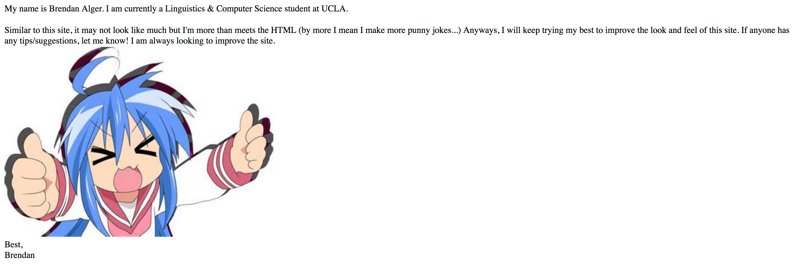

Progress Report #1
The beginning
So it has begun!! And well...it looks pretty bad. But worry not! It will get better over time. And for those reading in future updates, are you suprised by the improvements??
I will try to keep the pages as original as they looked before, but if I can't do that and this looks super modern, don't worry! It might look worse in the future(which in this case is actually a good thing)
Getting Started
Arguably the hardest part of all this, as I didn't even know where to begin. I knew I wanted to make a site to host my projects/learn web design, but just getting started was overwhelming. The (admittetdly very little) research I did said to learn HTML, CSS, Javascript, PHP, and the list goes on and on and on... I didn't even know where to go. Should I start with the backend and work my way to the front? How do I host it? What are good resources? How much do I want to pay? (Or the better question for a panniless college student like me was, "How much can I get for free?")
Okay, ACTUALLY getting started
After months of putting it off, I got tired of not seeing a site and got to work. I finally did more than a few minutes of googling and had some idea of where to go. I decidided to start off learning HTML (à la Codecademy. It's a good starting point. Having some programming knowledge, it was easy to pick up HTML; and Codecaemy walked me through the syntax without much reading.
The only other issue I had to worry about was how to put it online. How do I do it without worrying about backend servery-stuffs and without paying? Well, I left that to github pages. It's free, and instead of worrying about how to even set up a server, I just got right to it, made a .html file, and BAM! It was live. And this is what it looked like:

I got so excited that I could type in a url and my code would pop up that I even added an about me!

Future plans
Well, this is all I'm feeling to write now. I just really want to keep working on learning how to make this site better. I'll write more in another update! for now, this is the first and only article here. More to come!